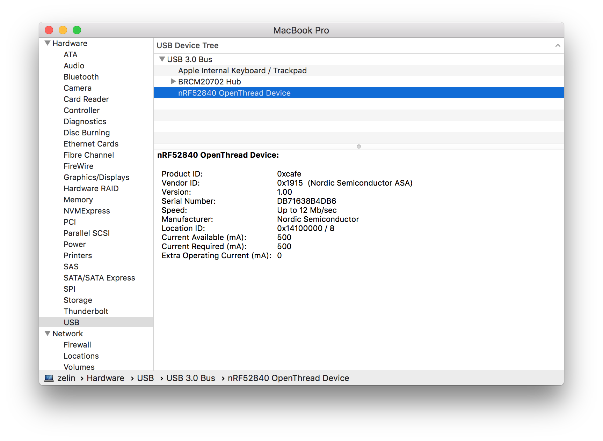
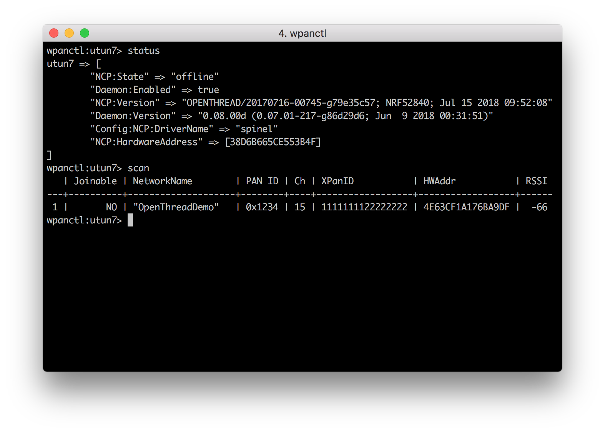

Getting started with nRF52840 Micro Dev Kit USB Dongle¶
Congratulations on getting the nRF52840 Micro Dev Kit USB Dongle!
This guide details how to get started with the nRF52840 Micro Dev Kit USB Dongle development, and what to expect when you do so.
When you get a new dongle, it has been preprogrammed with the OpenThread NCP image. So you can easily set up a Thread NCP Joiner, which can be securely authenticated and commissioned onto a Thread network.
What you'll need¶
- nRF52840 Micro Dev Kit USB Dongle
- PC running a Linux based operating system or MacOS
- wpantund
Installing wpantund¶
wpantund is a user-space network interface driver/daemon that provides a native IPv6 network interface to a low-power wireless Network Co-Processor (NCP). It was written and developed by Nest Labs to make supporting Thread connectivity on Unix-like operating systems more straightforward.
wpantund is designed to marshall all access to the NCP, ensuring that it always remains in a consistent and well-defined state.
Follow the wpantund Installation Guide to install wpantund on Ubuntu or macOS.
Connecting the USB Dongle¶
Connect the nRF52840 Micro Dev Kit USB Dongle to your host as shown below:

The USB Dongle will be recognized as an nRF52840 OpenThread Device like this:

Configure wpantund¶
In the NCP design, use wpantund to communicate with and manage the Thread device.
In a terminal window, start wpantund on the serial port with the NCP, creating the interface utun7 and enabling info logs:
$ sudo /usr/local/sbin/wpantund -o Config:NCP:SocketPath /dev/cu.usbmodem14112 \ -o Config:TUN:InterfaceName utun7 \ -o Daemon:SyslogMask " -info"
Tip
To configure wpantund without using command line parameters, modify the /etc/wpantund.conf file.
If the NCP is successfully running OpenThread, the output should be similar to the below:
Sep 11 20:51:21 wpantund[39634] <Notice>: Starting wpantund 0.08.00d (Jun 9 2018 00:31:51) . . . Sep 11 20:51:21 wpantund[39634] <Notice>: SOURCE_VERSION = 0.07.01-217-g86d29d6 Sep 11 20:51:21 wpantund[39634] <Notice>: BUILD_VERSION = 0.07.01-217-g86d29d6 Sep 11 20:51:21 wpantund[39634] <Notice>: Configuration file "/etc/wpantund.conf" read. Sep 11 20:51:21 wpantund[39634] <Notice>: Ready. Using DBUS bus ":1.0" Sep 11 20:51:21 wpantund[39634] <Notice>: Running as root without dropping privileges! Sep 11 20:51:21 wpantund[39634] <Notice>: [-NCP-]: NCP was reset (STATUS_RESET_POWER_ON, 112) Sep 11 20:51:21 wpantund[39634] <Error>: Unexpected reset during NCP initialization. Sep 11 20:51:21 wpantund[39634] <Error>: Resetting and trying again... (retry 1) Sep 11 20:51:21 wpantund[39634] <Notice>: [-NCP-]: NCP was reset (STATUS_RESET_POWER_ON, 112) Sep 11 20:51:21 wpantund[39634] <Notice>: State change: "uninitialized" -> "offline" Sep 11 20:51:21 wpantund[39634] <Notice>: NCP is running "OPENTHREAD/20170716-00745-g79e35c57; NRF52840; Jul 15 2018 09:52:08" Sep 11 20:51:21 wpantund[39634] <Notice>: Driver is running "0.08.00d (0.07.01-217-g86d29d6; Jun 9 2018 00:31:51)" Sep 11 20:51:21 wpantund[39634] <Notice>: Network is not joinable Sep 11 20:51:21 wpantund[39634] <Notice>: Resetting interface(s). . . Sep 11 20:51:21 wpantund[39634] <Notice>: Finished initializing NCP
Leave this terminal window open so that logs from wpantund can be viewed.
A user-defined interface is required to communicate with the NCP using wpanctl. Open a new terminal window and using wpanctl, connect to the interface you just set up:
$ sudo /usr/local/bin/wpanctl -I utun7 wpanctl:utun7>
Verify NCP¶
Verify that the NCP is in the correct state:
wpanctl:utun7> status utun7 => [ "NCP:State" => "offline" "Daemon:Enabled" => true "NCP:Version" => "OPENTHREAD/20170716-00745-g79e35c57; NRF52840; Jul 15 2018 09:52:08" "Daemon:Version" => "0.08.00d (0.07.01-217-g86d29d6; Jun 9 2018 00:31:51)" "Config:NCP:DriverName" => "spinel" "NCP:HardwareAddress" => [38D6B665CE553B4F] ]
Now, you can scan for networks on the NCP Joiner. If you have formed a Thread network, the output should be similar to the below:

Tip
You can follow this guide to Build a Thread network with nRF52840-MDK for testing.
Update NCP firmware¶
More features will be added to the NCP firmware gradually over time. The latest pre-built NCP firmware is a .hex file. You can download here:
While holding the dongle's RESET/USR button, connect it to your computer. When the Dongle has entered the bootloader mode, the RGB LED pulses RED. It is now ready for programming.
Note
For programming, just follow the "Programming" section.
How to build NCP firmware?¶
You can also build the latest NCP firmware by yourself. The following steps detail how to do that.
-
Clone and install OpenThread:
$ git clone --recursive https://github.com/openthread/openthread.git $ cd openthread $ ./bootstrap -
Build the firmware with the following commands:
$ make -f examples/Makefile-nrf52840 clean $ make -f examples/Makefile-nrf52840 USB=1 BOOTLOADER=1 BORDER_AGENT=1 BORDER_ROUTER=1 COMMISSIONER=1 JOINER=1 UDP_PROXY=1 CFLAGS+=-UCONFIG_GPIO_AS_PINRESET
Warning
You MUST undefine the
CONFIG_GPIO_AS_PINRESETflag, or the Dongle would not enter the bootloader mode next time by holding the dongle's RESET/USR button.Please remember to add
CFLAGS+=-UCONFIG_GPIO_AS_PINRESETto undefine theCONFIG_GPIO_AS_PINRESETflag! -
Navigate to the directory with the OpenThread FTD NCP binary, and convert it to hex format:
$ cd ~/openthread/output/nrf52840/bin $ arm-none-eabi-objcopy -O ihex ot-ncp-ftd ot-ncp-ftd.hexThe
ot-ncp-ftd.hexfile is the expected NCP firmware.
More applications¶
See the following topics for further introduction:
- Build an OpenThread Border Router with Raspberry Pi 3B
- Build a Thread Network Sniffer with Wireshark
Clone the repository¶
Clone the makerdiary/nrf52840-mdk-usb-dongle repository or download it as a zip package and put its contents to your working directory.
$ git clone https://github.com/makerdiary/nrf52840-mdk-usb-dongle.git
This repository provides documents and example applications that you can run on your board to ensure that everything is set up correctly.
You can also star or watch this repository to let GitHub send you notifications when something new is added.
Reference¶
-
Thread Primer — covers all the Thread concepts in this documentation
License¶
Content on this page is licensed under the Creative Commons Attribution 3.0 License.
Create an Issue¶
Interested in contributing to this project? Want to report a bug? Feel free to click here: